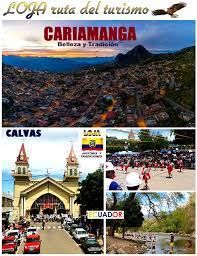
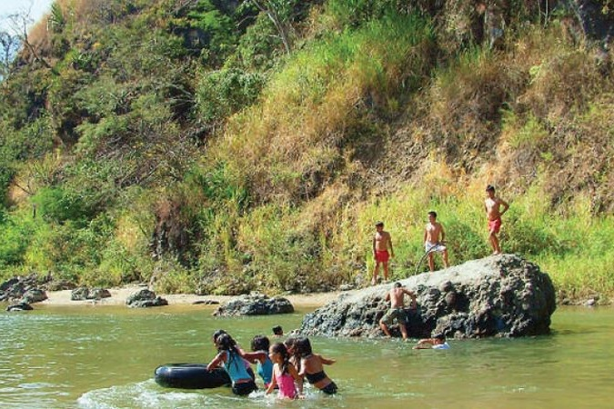
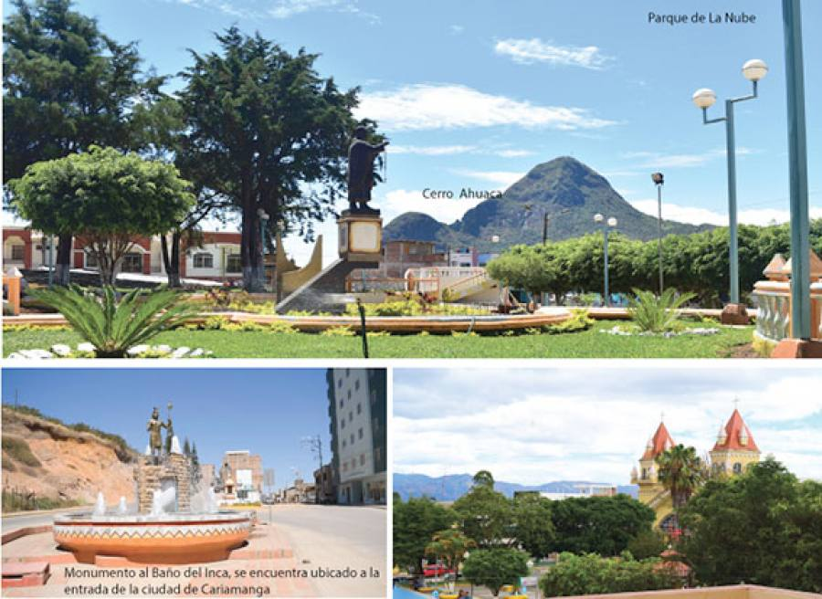

Cariamanga una bella ciudad que tiene una gran variedad de lugares turisticos donde personas
de otras ciudades vienen a visitar los diferentes sitios por ejemplo esta la parroquia lucero
con una gran variedad de rios que los turistas pueden disfrutra con su familia por otro lado
cariamanga tiene tiene al cerro ahuacaon una altura de 2470 m.s.n.m. la cima más alta y con 2454 msnm la cima más baja,
que hay lugares para que coloquen sus carpas.En la cima se puede apreciar una exelente vista
donde se ve todo nuestro cariamanga es una marabilla que tiene grandes cantitades de flora y fauna que nos rodea
ala poblacion del Canton Calvas .



|